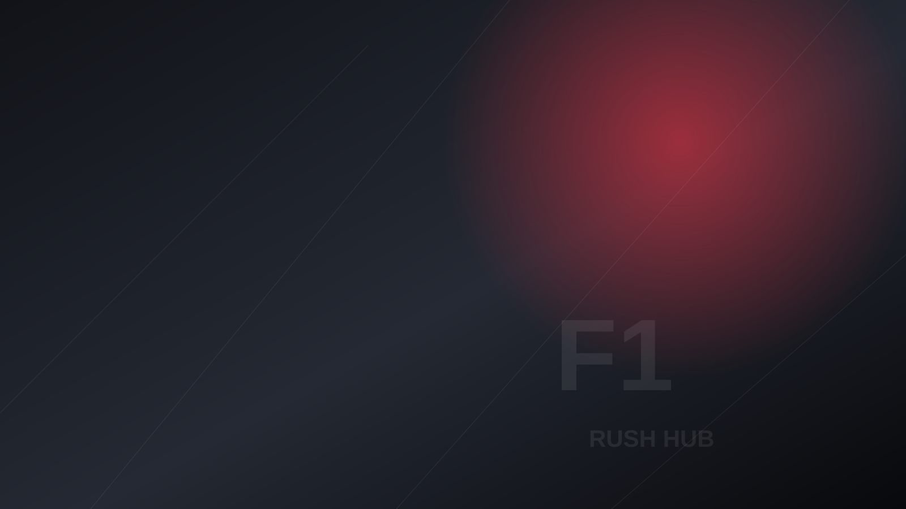

Um novo jeito de acompanhar a Fórmula 1: calendário, corridas, pilotos e campeonatos em uma experiência rápida e visual.
O próximo capítulo da temporada 2026, destacado de forma simples e direta.
Todos os 24 GPs da temporada em uma única visão.
Estrutura pronta para receber dados oficiais sem esconder informações ausentes.
Classificação e informações da temporada.
Construtores, posições e evolução do campeonato.